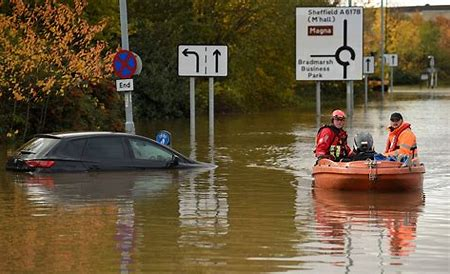

Floods
Floods, big or small, can have devastating effects on your home and your family. You can take steps to reduce the harm caused by flooding. Learn how to prepare for a flood, stay safe during a flood, and protect your health when you return home after a flood.
Floods

Preparing for a Flood
Learn how to prepare for a flood, including how to create a plan, supplies you’ll need, and getting your home ready.
view more

Floodwater Safety
Floodwater and standing water can be dangerous. Protect yourself and your loved ones from risks brought on by floods.
view more
Returning Home
Returning home after a flood? Be aware that your home may be contaminated with mold or sewage. Take steps to keep yourself and your loved ones safe.
view more